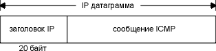
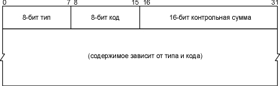
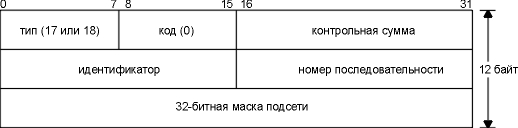
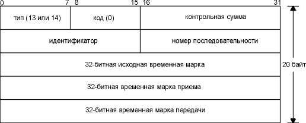
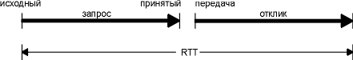
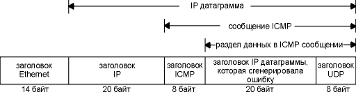
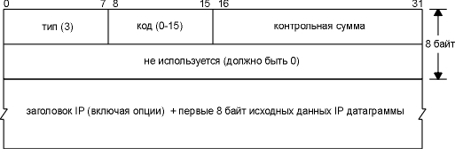
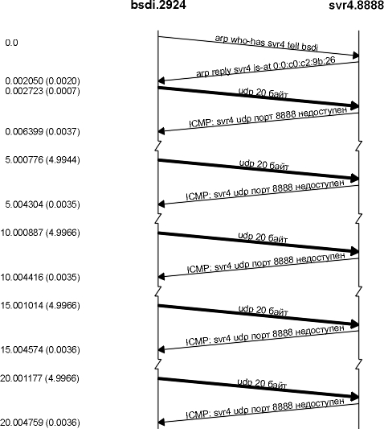

Глава 6 ICMP: протокол управления сообщениями Internet
Обычно считается, что ICMP это часть IP уровня. С его помощью передаются сообщения об ошибках и сообщения о возникновении условий и ситуаций, которые требуют к себе особого внимания. ICMP сообщения обрабатываются IP уровнем или более высокими уровнями (TCP или UDP). При появлении некоторых ICMP сообщений генерируются сообщения об ошибках, которые передаются пользовательским процессам.
ICMP сообщения передаются внутри IP датаграмм, как показано на рисунке 6.1.

Рисунок 6.1 Инкапсуляция ICMP сообщений в IP датаграммы.
Официальная спецификация ICMP находится в RFC 792 [Postel 1981b].
На рисунке 6.2 показан формат ICMP сообщения. Первые 4 байта одинаковы для всех сообщений, однако остальные отличаются в зависимости от типа сообщения. Мы будем показывать точный формат каждого сообщения, по мере того как будем их описывать.
Существует 15 различных значений для поля типа (type), которые указывают на конкретныей тип ICMP сообщения. Для некоторых ICMP сообщений используются различные значения в поле кода (code), подобным образом осуществляется дальнейшее подразделение ICMP сообщений.
Поле контрольной суммы (checksum) охватывает ICMP сообщения целиком. Алгоритм, используемый при этом, такой же как тот, что был описан в разделе "IP заголовок" главы 3 при расчете контрольной суммы IP заголовка. Контрольная сумма ICMP присутствует всегда.

Рисунок 6.2 ICMP сообщение.
В этой главе мы рассмотрим ICMP сообщения в целом, некоторые из них подробно: запрос и отклик маски адреса, запрос и отклик временной марки и сообщение о недоступности порта. В главе 7 мы обсудим, с использованием программы Ping, эхо запрос и эхо отклик, а в главе 9 рассмотрим ICMP сообщения, связанные с IP маршрутизацией.
На рисунке 6.3 приведены возможные типы ICMP сообщений, как они определяются полями типа (type) и кода (code).
Последние две колонки на рисунке указывают, является ли ICMP сообщение запросом (query) или сообщением об ошибке (error). Подобное разделение необходимо, потому что сообщения об ошибках ICMP иногда обрабатываются специальным образом. Например, ICMP сообщение об ошибке никогда не генерируется в ответ на ICMP сообщение об ошибке. (Если не придерживаться этого правила, то ошибка будет генерироваться на ошибку до бесконечности.)
Когда посылается ICMP сообщение об ошибке, оно всегда содержит IP заголовок и первые 8 байт IP датаграммы, которая вызвала генерацию ICMP ошибки. Это позволяет принимающему ICMP модулю установить соответствие между полученным сообщением, одним из конкретных протоколов (TCP или UDP из поля протоколов в IP заголовке) и с одним из конкретных пользовательских процессов (с помощью номера порта TCP или UDP, который содержится в TCP или UDP заголовке в первых 8 байтах IP датаграммы). В разделе "ICMP ошибка недоступности порта (ICMP Port Unreachable Error)" главы 6 мы рассмотрим это более подробно.
Сообщение об ошибке ICMP никогда не генерируется в ответ на:
тип |
код |
Описание |
запрос |
ошибка |
0 |
0 |
эхо-отклик (отклик-Ping, глава 7) | ╥ |
|
3 |
назначение недоступно: | |||
0 |
сеть недоступна - network unreachable (раздел "ICMP ошибки о недоступности хоста и сети" главы 9) | ╥ |
||
1 |
хост недоступен - host unreachable (раздел "ICMP ошибки о недоступности хоста и сети" главы 9) | ╥ |
||
2 |
протокол недоступен - protocol unreachable | ╥ |
||
3 |
порт недоступен - port unreachable (раздел "ICMP ошибка недоступности порта (ICMP Port Unreachable Error)" главы 6) | ╥ |
||
4 |
необходима фрагментация, однако установлен бит ⌠не фрагментировать■- fragmentation needed but don▓t-fragment bit set (раздел "ICMP ошибки о недоступности" главы 11) | ╥ |
||
5 |
не работает маршрутизация от источника - source route failed (глава 8, раздел "Опция IP маршрутизации от источника") | ╥ |
||
6 |
неизвестна сеть назначения - destination network unknown | ╥ |
||
7 |
неизвестен хост назначения - destination host unknown | ╥ |
||
8 |
хост источник изолирован - source host isolated | ╥ |
||
9 |
сеть назначения закрыта администратором - destination network administrativrly prohibited | ╥ |
||
10 |
хост назначения закрыт администратором - destination host administrativrly prohibited | ╥ |
||
11 |
сеть недоступна для TOS - network unreachable for TOS (глава 9, раздел "ICMP ошибки о недоступности хоста и сети") | ╥ |
||
12 |
хост недоступен для TOS - host unreachable for TOS (глава 9, раздел "ICMP ошибки о недоступности хоста и сети") | ╥ |
||
13 |
связь административно закрыта путем фильтрации - communication administratively prohibited by filtering | ╥ |
||
14 |
нарушено старшинство для хоста - host precedence violation | ╥ |
||
15 |
старшинство разъединено - precedence cutoff in effect | ╥ |
||
4 |
0 |
подавление источника (элементарное управление потоком данных) - source quench (глава 11, раздел "ICMP ошибка подавления источника") | ╥ |
|
5 |
перенаправление - redirect (глава 11, раздел "ICMP ошибка подавления источника"): | |||
0 |
перенаправление в сеть - redirect for network | ╥ |
||
1 |
перенаправление в хост - redirect for host | ╥ |
||
2 |
перенаправление для типа сервиса и сети - redirect for type-of-service and network | ╥ |
||
3 |
перенаправление для типа сервиса и хоста - redirect for type-of-service and host | ╥ |
||
8 |
0 |
эхо запрос - echo request (Ping запрос, глава 7) | ╥ |
|
9 |
0 |
объявление маршрутизатора - router advertisement (глава 9, раздел "ICMP сообщения поиска маршрутизатора") | ╥ |
|
10 |
0 |
запрос к маршрутизатору - router solicitation (глава 9, раздел "ICMP сообщения поиска маршрутизатора") | ╥ |
|
11 |
время истекло - time exceeded: | |||
0 |
время жизни стало равным 0 в процессе передачи - time-to-live equals 0 during transit (Traceroute, глава 8) | ╥ |
||
1 |
время жизни стало равным 0 в процессе повторной сборки - time-to-live equals 0 during reassembly (глава 11, раздел "Фрагментация IP") | ╥ |
||
12 |
проблемы с параметрами - parameter problem: | |||
0 |
неверный IP заголовок - IP header bad | ╥ |
||
1 |
отсутствует необходимая опция - required option missing | ╥ |
||
13 |
0 |
запрос временной марки - timestamp request (глава 6, раздел "ICMP запрос и отклик временной марки") | ╥ |
|
14 |
0 |
отклик с временной маркой - timestamp reply (глава 6, раздел "ICMP запрос и отклик временной марки") | ╥ |
|
15 |
0 |
информационный запрос - information request | ╥ |
|
16 |
0 |
информационный отклик - information reply | ╥ |
|
17 |
0 |
запрос маски адреса - address mask request (глава 6, раздел "ICMP запрос и отклик маски адреса") | ╥ |
|
18 |
0 |
отклик с маской адреса - address mask reply (глава 6, раздел "ICMP запрос и отклик маски адреса") | ╥ |
Рисунок 6.3 Типы сообщений ICMP.
Эти правила введены для того, чтобы предотвратить лавинообразный рост количества широковещательных сообщений, который может произойти, если ICMP сообщения об ошибках будут отправляться в ответ на широковещательные пакеты.
ICMP запрос и отклик маски адреса
ICMP запрос маски адреса используется бездисковыми системами, чтобы получить маску подсети (глава 3, раздел "Маска подсети") во время загрузки. Система посылает широковещательный ICMP запрос. (Это напоминает то, как бездисковые системы с использованием RARP получают свои IP адреса во время загрузки.) Альтернативный метод для бездисковых систем получить маски своих подсетей - протокол BOOTP, о котором рассказано в главе 16. На рисунке 6.4 показан формат ICMP запроса и отклика маски адреса.

Рисунок 6.4 ICMP запрос и отклик маски адреса.
Поля идентификатора и номера последовательности в ICMP сообщении могут быть установлены по выбору отправителя, эти же значения будут возвращены в отклике. Именно таким образом отправитель идентифицирует отклик на свой запрос.
Мы можем написать простую программу (которая называется icmpaddrmask), которая выдает ICMP запрос маски адреса и печатает все отклики. Обычно, запрос отправляется на широковещательный адрес, мы поступим точно так же. Адрес назначения (140.252.13.63) это широковещательный адрес для подсети 140.252.13.32 (см. рисунок 3.12).
sun % icmpaddrmask 140.252.13.63
received mask = ffffffe0, from 140.252.13.33
от самого себя
received mask = ffffffe0, from 140.252.13.35
от bsdi
received mask = ffff0000, from 140.252.13.34
от svr4
Первое, на что стоит обратить внимание в выводе программы, это то, что значение, возвращенное от svr4, неверно. Это произошло из-за того, что SVR4 возвращает общую маску подсети класса В, подразумевающую, что деление на подсети не осуществлено, даже несмотря на то что интерфейс svr4 сконфигурирован с правильной маской подсети:
svr4 % ifconfig emd0
emd0: flags=23<UP, BROADCAST, NOTRAILERS.
inet 140.252.13.34 netmask ffffffe0 broadcast 140.252.13.63
Это одна из известных ошибок SVR4 возникающая при обработке ICMP запросов маски адреса.
Мы рассмотрим обмен пакетами для хоста bsdi, используя tcpdump. Вывод показан на рисунке 6.5. Была использована опция -e, которая позволяет посмотреть аппаратные адреса.
1 0.0
8:0:20:3:f6:42
ff:ff:ff:ff:ff:ff ip 60:
sun
> 140.252.13.63: icmp: address mask request
2 0.00 (0.00) 0:0:c0:6f:2d:40 ff:ff:ff:ff:ff:ff ip 46:
bsdi
> sun: icmp: address mask is 0xffffffe0
3 0.01 (0.01) 0:0:c0:6f:2d:40 8:0:20:3:f6:42 ip 60:
svr4
> sun: icmp: address mask is 0xffff0000
Рисунок 6.5 ICMP запрос маски адреса, отправленный на широковещательный адрес.
Обратите внимание на то, что посылающий хост, sun, принимает ICMP отклик (строка вывода с комментарием "от самого себя", которая была показана ранее), даже если "в кабеле" ничего не было. Это основная характеристика широковещательных запросов: посылающий хост принимает копию широковещательного пакета через внутренний механизм loopback. Так как по определению термин "широковещательный запрос" означает все хосты в локальной сети, сюда же включается и посылающий хост. (Если обратиться к рисунку 2.4, можно увидить, что драйвер Ethernet, определив, что адрес назначения является широковещательным, посылает пакет в сеть и копирует его в интерфейс loopback.)
Затем bsdi отправляет широковещательным запросом отклик, тогда как svr4 посылает отклик только тому, кто отправил запрос. Обычно отклик должен быть персональным, если только IP адрес источника в запросе не установлен в 0.0.0.0, отправка откликов на широковещательный адрес это ошибка, допущенная в BSD/386.
Требования к хостам Host Requirements RFC гласят, что система не должна отправлять отклик о маске адреса, если она не является полномочным агентом для рассылки масок адресов. (Чтобы являтьься полномочным агентом и рассылать подобные отклики, система должна быть специально сконфигурирована. (См. приложение Е.) Однако, как мы видим из этого примера, большинство реализаций посылают отклик в ответ на полученный запрос. Иногда хосты даже посылают неверные отклики!
Обратимся к следующему примеру. Мы посылаем запрос о маске адреса на свой собственный IP адрес и на loopback адрес:
sun % icmpaddrmask sun
received mask = ff000000, from 140.252.13.33
sun % icmpaddrmask localhost
received mask = ff000000, from 127.0.0.1
В обоих случаях возвращенная маска адреса соответствует адресу loopback, адресу 127.0.0.1 сети класса А. Снова обратившись к рисунку 2.4 мы увидим, что IP датаграммы, посланные на собственный IP адрес хоста (140.252.13.33 в данном примере), в действительности посылаются на loopback интерфейс. ICMP отклик о маске адреса должен соответствовать маске подсети интерфейса, на которой был принят запрос (при этом хост с несколькими интерфейсами может иметь различные маски подсети для каждого интерфейса), а в нашем случае оба запроса получены с интерфейса loopback.
ICMP запрос и отклик временной марки
ICMP запрос временной марки позволяет системе запросить другую систему о текущем времени. Рекомендуемое значение, которое должно быть возвращено, это количество миллисекунд, которые прошли с полуночи в формате UTC, (Универсальное согласованное время - Coordinated Universal Time). (В старых руководствах UTC называется Среднее время по Гринвичу - Greenwich Mean Time.) Одна из основных особенностей ICMP сообщения заключается в том, что оно предоставляет время в с точностью до миллисекунд, тогда как другие методы используемые для получения времени от удаленных систем (например, команда rdate, существующая в некоторых UNIX системах) предоставляют время с точностью до секунд. Недостаток заключается в том, что сообщается только время, прошедшее с полуночи, - запрашивающая система должена знать текущую дату. На рисунке 6.6 показан формат ICMP запроса и формат ICMP отклика временной марки.

Рисунок 6.6 ICMP запрос и отклик временной марки.
Запрашивающий заполняет исходную временную марку и отправляет запрос. Отвечающая система заполняет временную марку приема, когда получает запрос, и временную марку передачи, когда отправляет отклик. Большинство реализаций устанавливают в два последних поля одно и то же значение. (Причина, по которой существуют три поля, заключается в том, что отправителю необходимо вычислить время, которое потребовалось на отправку запроса, и отдельно рассчитать время, которое потребуется на отправку отклика.)
Примеры
Воспользуемся простой программой (которая называется icmptime), которая посылает ICMP запрос временной марки и печатает полученный отклик. Запустим эту программу в нашей маленькой сети:
sun % icmptime bsdi
orig = 83573336, recv = 83573330, xmit = 83573330, rtt = 2 ms
difference = -6 ms
sun % icmptime bsdi
orig = 83577987, recv = 83577980, xmit = 83577980, rtt = 2 ms
difference = -7 ms
Программа выдала три временные марки из ICMP сообщения: исходную (orig), приема (recv) и передачи (xmit). Из этого и следующих примеров видно, что все хосты установили временные марки приема и передачи в одно и то же значение.
Также мы рассчитали время возврата (rtt) , которое рассчитывается как время, когда был принят отклик, минус время, когда был отправлен запрос. difference - это временная марка приема минус исходная временная марка. На рисунке 6.7 показана взаимосвязь между этими значениями.

Рисунок 6.7 Взаимосвязь между значениями, напечатанными программой icmptime.
Если принять за истину то, что одна половина RTT отводится под запрос, а другая половина под отклик, тогда часы отправителя должны быть настроены как difference минус половина RTT, чтобы иметь то же самое время, как у хоста к которому отправляется запрос. В предыдущем примере часы bsdi отставали на 7 и 8 миллисекунд от часов sun.
Так как временная марка является количеством миллисекунд после полуночи, UTC должны быть всегда меньше чем 86400000 (24х60х60х1000). Эти примеры были исполнены сразу после 16:00 во временной зоне имеющей отставание на 7 часов от UTC, таким образом, приемлемыми являются значения больше чем 82800000 (2300 часов).
Если мы запустим эту программу несколько раз на хост bsdi, то увидим, что последние цифры во временной марке передачи и приема всегда равны нулю. Это происходит из-за того, что программный релиз (Version 0.9.4) имеет часы с точностью 10 миллисекунд. (Мы опишем это в приложении В.)
Если мы запустим программу дважды на хост svr4, то увидим что уже три младшие цифры во временной марке SVR4 равны нулю:
sun % icmptime svr4
orig = 83588210, recv = 83588000, xmit = 83588000, rtt = 4 ms
difference = -210 ms
sun % icmptime svr4
orig = 83591547, recv = 83591000, xmit = 83591000, rtt = 4 ms
difference = -547 ms
По каким-то причинам SVR4 не предоставляет разрешение времени с точностью до миллисекунд при использовании временной марки ICMP. Подобная неточность делает расчет разницы во времени бесполезным, если разговор идет о миллисекундах.
Если мы обратимся к двум другим хостам в подсети 140.252.1, то увидим, что установка одних часов отличается от установки часов sun на 3,7 секунды, а других на 75 секунд:
sun % icmptime gemini
orig = 83601883, recv = 83598140, xmit = 83598140, rtt = 247 ms
difference = -3743 ms
sun % icmptime aix
orig = 83606768, recv = 83532183, xmit = 83532183, rtt = 253 ms
difference = -74585 ms
Другой интересный пример может быть получен при обращении к маршрутизатору gateway (маршрутизатор Cisco). Из примера видно, что если система возвращает нестандартное значение временной марки (отличающееся от количества миллисекунд после полуночи, UTC), старшие биты в 32-битной временной марке устанавливаются в единицу. Наша программа определяет это и печатает временные марки приема и передачи в треугольных скобках (после установки старших битов в ноль). Мы можем рассчитать разницу между исходной временной маркой и временной маркой приема.
sun % icmptime gateway
orig = 83620811, recv = <4871036>, xmit = <4871036>, rtt = 220 ms
sun % icmptime gateway
orig = 83641007, recv = <4891232>, xmit = <4891232>, rtt = 213 ms
Если запустить нашу программу на этот хост несколько раз, то можно заметить, что полученные значения имеют точность до миллисекунд и содержит количество миллисекунд с какой-то начальной точки, однако начальная точка не полночь, UTC. (Это может быть, например, счетчик, который увеличивается на единицу каждую миллисекунду с момента загрузки маршрутизатора.)
И в качестве последнего примера сравним часы sun с часами системы, которые считаются абсолютно точными - сервер NTP. (Мы расскажем о протоколе сетевого времени NTP - Network Time Protocol, ниже.)
sun % icmptime clock.llnl.gov
orig = 83662791, recv = 83662919, xmit = 83662919, rtt = 359 ms
difference = 128 ms
sun % icmptime clock.llnl.gov
orig = 83670425, recv = 83670559, xmit = 83670559, rtt = 345 ms
difference = 134 ms
Если вычесть из разницы (difference) половину RTT, то можно будет сказать, что часы sun торопятся на величину в диапазоне 51,5 - 38,5 миллисекунды.
Другие возможные варианты
Существуют другие способы получить время и дату.
sun % telnet bsdi daytime
Trying 140.252.13.35 ...
Connected to bsdi.
Escape character is '^]'.
первые
три строки - вывод Telnet клиента
Wed Feb 3 16:38:33 1993
это
вывод сервиса дневного времени
Connection closed by foreign host. это опять вывод
Telnet клиента
Сервер времени возвращает 32-битное двоичное значение, содержащее количество секунд после полуночи 1 января 1900 года, UTC. (Команда rdate, которую мы упоминали ранее, использует сервис времени TCP.)
ICMP ошибка недоступности порта (ICMP Port Unreachable Error)
В двух последних разделах описаны запросы ICMP - маски адреса, и запросы и отклики временной марки. Сейчас мы рассмотрим ICMP сообщения об ошибках, а именно: сообщение о недоступности порта, подкод сообщения ICMP о недоступности пункта назначения. Также рассмотрим дополнительную информацию, которая возвращается в ICMP сообщении об ошибке. Для этого воспользуемся UDP (глава 11).
Если UDP принимает датаграмму, порт назначения которой не соответствует порту, который обслуживается каким-либо процессом, UDP выдает ICMP сообщение о недоступности порта. Попробуем получить ошибку недоступности порта с использованием TFTP клиента. (TFTP подробно описан в главе 15.)
TFTP сервер использует заранее-известный UDP порт 69. Однако большинство программ TFTP клиента позволяют указать другой порт с помощью команды connect. В данном случае мы указали порт 8888:
bsdi % tftp
tftp> connect svr4 8888
указываем имя сервера
и номер порта
tftp> get temp.foo
пробуем
получить файл
Transfer timed out.
25
секунд спустя истекает время таймера
tftp> quit
Команда connect сохраняет имя хоста, с которым необходимо установить соединение, и номер порта на этом хосте для дальнейшего использования командой get. После того как введена команда get, UDP датаграмма посылается на порт 8888 хоста svr4. На рисунке 6.8 показан вывод команды tcpdump, иллюстрирующий обмен пакетами.
Перед тем как послать UDP датаграмму на svr4, отправляется ARP запрос, для того чтобы определить аппаратный адрес (строка 1). Возвращается ARP отклик (строка 2), после чего отправляются UDP датаграммы (строка 3). (Мы оставили ARP запрос-отклик в выводе команды tcpdump, чтобы напомнить Вам, что этот обмен необходим перед отправкой первой IP датаграммы с одного хоста на другой. В следующих примерах мы не будем приводить ARP обмен.)
1 0.0
arp
who-has svr4 tell bsdi
2 0.002050 (0.0020) arp reply svr4 is-at
0:0:c0:c2:9b:26
3 0.002723 (0.0007) bsdi.2924 > svr4.8888: udp 20
4 0.006399 (0.0037) svr4 > bsdi: icmp: svr4 udp
port 8888 unreachable
5 5.000776 (4.9944) bsdi.2924 > svr4.8888: udp 20
6 5.004304 (0.0035) svr4 > bsdi: icmp: svr4 udp
port 8888 unreachable
7 10.000887 (4.9966) bsdi.2924 > svr4.8888: udp 20
8 10.004416 (0.0035) svr4 > bsdi: icmp: svr4 udp port
8888 unreachable
9 15.001014 (4.9966) bsdi.2924 > svr4.8888: udp 20
10 15.004574 (0.0036) svr4 > bsdi: icmp: svr4 udp port
8888 unreachable
11 20.001177 (4.9966) bsdi.2924 > svr4.8888: udp 20
12 20.004759 (0.0036) svr4 > bsdi: icmp: svr4 udp port
8888 unreachable
Рисунок 6.8 Генерация ICMP ошибки о недоступности порта в ответ на TFTP запрос.
ICMP ошибка о недоступности порта возвращается немедленно (строка 4). Однако TFTP клиент игнорирует ICMP сообщение и посылает следующую UDP датаграмму примерно через 5 секунд (строка 5). Это повторяется трижды, перед тем как клиент прекращает свои попытки.
Обратите внимание на то, что ICMP сообщения передаются между хостами без номера порта назначения, тогда как каждая 20-байтовая UDP датаграмма выходит из указанного порта (2924) в указанный порт (8888).
Число 20 в конце каждой UDP строки это длина данных в UDP датаграмме. В данном примере 20 - это сумма двухбайтного кода операции (opcode) TFTP, 9-байтного имени (temp.foo) и 9-байтной строки netascii. (На рисунке 15.1 подробно описано содержимое пакета TFTP.)
Если мы запустим тот же пример с опцией -e команды tcpdump, то увидим точную длину каждого ICMP сообщения о недоступности порта, которое возвращается отправителю. Длина составляет 70 байт. (см. рисунок 6.9).

Рисунок 6.9 ICMP сообщение, вернувшееся в нашем примере "порт UDP недоступен".
Одно из правил, которому подчиняется ICMP, заключается в том, что ICMP сообщение об ошибке (см. последнюю колонку на рисунке 6.3) должно включать IP заголовок (включая все опции) датаграммы, на которую сгенерирована ошибка. Также ICMP сообщение об ошибке содержит, по крайней мере, первые 8 байт из IP датаграммы, которые следуют за IP заголовком. В нашем примере первые 8 байт, следующие за IP заголовком, содержат UDP заголовок (рисунок 11.2).
Очень важный факт заключается в том, что UDP заголовок содержит номера портов источника и назначения. В данном случае это порт назначения (8888), из-за которого было сгенерировано ICMP сообщение о недоступности порта. Номер порта источника (2924) может быть использован системой, получившей ICMP сообщение об ошибке, чтобы установить соответствие между принятой ошибкой и конкретным пользовательским процессом (в данном случае TFTP клиент).
Одна из причин, по которой IP заголовок датаграммы, которая вызвала сообщение об ошибке, посылается обратно, заключается в том, что этот IP заголовок содержит поле протокола, которое позволяет ICMP модулю понять, как необходимо интерпретировать следующие 8 байт (в данном примере - UDP заголовок). Если обратиться к TCP заголовку (см. рисунок 17.2), то мы увидим, что номера портов источника и назначения содержатся в первых 8 байтах TCP заголовка. Общий формат ICMP сообщений о недоступности показан на рисунке 6.10.

Рисунок 6.10 Сообщение о недоступности ICMP.
На рисунке 6.3 мы видели, что существует 16 различных ICMP сообщений о недоступности с кодами от 0 до 15. ICMP сообщение о недоступности порта имеет код 3. На рисунке 6.10 показано, что второе 32-битное слово в ICMP сообщении должно быть установлено в 0. Механизм определения транспортного MTU (глава 2, раздел "Транспортный MTU") позволяет маршрутизатору поместить MTU исходящего интерфейса в младшие 16 бит этого 32-битного значения, когда код равен 4 ("необходима фрагментация, однако установлен бит не фрагментировать "). Мы покажем пример подобной ошибки в разделе "ICMP ошибки о недоступности (требуется фрагментация)" главы 11.
Правила, по которым действует ICMP, позволяют системе вернуть больше чем первые 8 байт раздела данных IP датаграммы, которая вызвала ICMP ошибку, однако большинство Berkeley реализаций возвращают ровно 8 байт. В Solaris 2.2, с использованием опции ip_icmp_return_data_bytes, может быть указано, сколько байт необходимо возвращать, однако по умолчанию возвращаются первые 64 байта данных (приложение E, раздел "Solaris 2.2").
Временная диаграмма работы команды tcpdump
Здесь мы приводим временную диаграмму, соответствующую выводу команды tcpdump, приведенному на рисунке 6.11.

Рисунок 6.11 Временная диаграмма запроса TFTP на неверный порт.
Время на рисунке увеличивается по направлению вниз, а метки, стоящие крайними слева на рисунке, соответствуют величинам времени в выводе команды tcpdump, приведенном на рисунке 6.8. Метки вверху - это имена хостов и номера портов каждой конечной системы. Однако, вертикальное представление времени на рисунке не точно соответствует реальному времени. При передаче данных UDP или TCP мы показываем пакет с помощью жирной линии.
Почему TFTP клиент осуществляет повторную передачу своего запроса после прихода сообщения ICMP? Особенность сетевого программирования, присутствующая в системах BSD, заключается в том, что пользовательский процесс, использующий UDP, не предупреждается о приеме ICMP сообщения на этот сокет, если только процесс не установил соединение (connect) к этому сокету. Стандартный TFTP клиент системы BSD не выдает connect, поэтому он никогда не получит уведомления о приходе ICMP ошибки.
Также необходимо обратить внимание на то, что при работе TFTP клиента используется алгоритм тайм-аутов и повторных передач. TFTP клиент просто осуществляет повторную передачу каждые 5 секунд, всего в течение 25 секунд. Позже мы увидим, что подобный алгоритм протокола TCP значительно лучше.
Устаревший алгоритм тайм-аутов и повторных передач, используемый TFTP клиентом, в настоящее время запрещен Host Requirements RFC. Тем не менее, все три системы в описываемой подсети и Solaris 2.2 до сих пор его используют. AIX 3.2.2 использует экспотенциальный рост тайм-аута, посылая пакеты с интервалом 0, 5, 15 и 35 секунд. В настоящее время рекомендуется именно такой способ расчета тайм-аутов. Более подробно мы обсудим тайм-ауты в главе 21.
И в заключение, обратите внимание на то, что ICMP сообщения вернулись примерно через 3,5 миллисекунды после отправки UDP датаграммы. В главе 7 мы увидим, что это примерно соответствует времени возврата для отклика Ping.
Обработка ICMP сообщений в 4.4BSD
Так как ICMP охватывает очень широкий диапазон различных условий, начиная от фатальных ошибок и заканчивая информационными сообщениями, каждое ICMP сообщение обрабатывается по-своему даже в рамках одной реализации. Рисунок 6.12 это повтор рисунка 6.3, который показывает обработку возможных ICMP сообщений системой 4.4BSD.
Если в последней колонке указано "ядро", ICMP сообщение обрабатывается ядром, если - "пользовательский процесс", это означает, что сообщение передается всем пользовательским процессам, которые зарегистрированы в ядре так, что могут читать принятые ICMP сообщения. Если подобных пользовательских процессов нет, сообщение молча удаляется. (Эти пользовательские процессы также получают копии всех других ICMP сообщений, даже если те обрабатываются ядром, однако только после того, как ядро обработало сообщение.) Некоторые сообщения полностью игнорируются. И в заключение, если в последней колонке находится строка в кавычках, то эта строка является сообщением об ошибке Unix, соответствующее создавшемуся условию. Некоторые из ошибок мы рассмотрим в следующих главах.
тип |
код |
Описание |
Кем обрабатывается |
0 |
0 |
эхо отклик | пользовательский процесс |
3 |
назначение недоступно - destination unreachable: | ||
0 |
сеть недоступна - network unreachable | "No route to host" | |
1 |
хост недоступен - host unreachable | "No route to host" | |
2 |
протокол недоступен - protocol unreachable | "Connection refused" | |
3 |
порт недоступен - port unreachable | "Connection refused" | |
4 |
необходима фрагментация, но установлен бит DF - fragmentation needed but DF bit set | "Message too long" | |
5 |
сбой маршрутизация от источника - source route failed | "No route to host" | |
6 |
сеть назначения неизвестна - destination network unknown | "No route to host" | |
7 |
хост назначения неизвестен - destination host unknown | "No route to host" | |
8 |
хост назначения изолирован - source host isolated (obsolete) | "No route to host" | |
9 |
сеть назначения административно закрыта - destination network administratively prohibited | "No route to host" | |
10 |
хост назначения административно закрыт - destination host administratively prohibited | "No route to host" | |
11 |
сеть недоступна для TOS - network unreachable for TOS | "No route to host" | |
12 |
хост недоступен для TOS - host unreachable for TOS | "No route to host" | |
13 |
связь административно закрыта - communication administratively prohibited | (игнорируется) | |
14 |
нарушено старшинство для хоста - host precedence violation | (игнорируется) | |
15 |
старшинство разъединено - precedence cutoff in effect | (игнорируется) | |
4 |
0 |
подавление источника - source quench | ядром TCP, игнорируется UDP |
5 |
перенаправление - redirect: | ||
0 |
перенаправление в сеть - redirect for network | ядро обновляет таблицу маршрутизации | |
1 |
перенаправление в хост - redirect for host | ядро обновляет таблицу маршрутизации | |
2 |
перенаправление для типа сервиса и сети - redirect for type-of-service and network | ядро обновляет таблицу маршрутизации | |
3 |
перенаправление для типа сервиса и хоста - redirect for type-of-service and host | ядро обновляет таблицу маршрутизации | |
8 |
0 |
эхо запрос - echo request | ядро генерирует отклик |
9 |
0 |
объявление маршрутизатора - router advertisement | пользовательский процесс |
10 |
0 |
запрос к маршрутизатору - router solicitation | пользовательский процесс |
11 |
время истекло - time exceeded: | ||
0 |
время жизни стало равным 0 в процессе передачи - time-to-live equals 0 during transit | пользовательский процесс | |
1 |
время жизни стало равным 0 в процессе повторной сборки - time-to-live equals 0 during reassembly | пользовательский процесс | |
12 |
проблемы с параметрами - parameter problem: | ||
0 |
неверный IP заголовок - IP header bad | "Protocol not available" | |
1 |
отсутствует необходимая опция - required option missing | "Protocol not available" | |
13 |
0 |
запрос временной марки - timestamp request | ядро генерирует отклик |
14 |
0 |
отклик с временной маркой - timestamp reply | пользовательский процесс |
15 |
0 |
информационный запрос - information request | (игнорируется) |
16 |
0 |
информационный отклик - information reply | пользовательский процесс |
17 |
0 |
запрос маски адреса - address mask request | ядро генерирует отклик |
18 |
0 |
отклик с маской адреса - address mask reply | пользовательский процесс |
Рисунок 6.12 Обработка ICMP сообщений в 4.4BSD.
В этой главе рассмотрен протокол управления сообщениями Internet (Internet Control Message Protocol), который является неотъемлемой частью каждой реализации. На рисунке 6.3 приведены все типы ICMP сообщений, большинство из которых мы обсудили или обсудим в тексте.
Мы рассмотрели ICMP запрос маски адреса и соответствующий отклик, а также запрос и отклик временной марки. Эти типы ICMP сообщений мы рассмотрели более или менее подробно. Они являются типичными сообщениями в форме запрос-отклик. Оба имеют идентификатор и номер последовательности в ICMP сообщении. Посылающее приложение сохраняет уникальное значение в поле идентификатора, чтобы провести различие между откликами для него самого (направляемые ему) и откликами для других процессов. Поле номера последовательности позволяет клиенту сопоставить запрос с полученным откликом.
Также мы рассмотрели ICMP ошибку недоступности порта, которая является наиболее общей ошибкой ICMP. Это позволило нам более подробно рассмотреть информацию, которая возвращается в ICMP ошибке: IP заголовок и следующие 8 байт из IP датаграммы, которая вызвала генерацию ошибки. Эта информация необходима ICMP модулю, принимающему ошибку, для того чтобы узнать больше о том, чем была вызвана ошибка. И TCP, и UDP сохраняют номера портов источника и назначения в первых 8 байтах своих заголовков именно по этой причине.
В заключение, мы показали строки вывода tcpdump, эту команду мы будем довольно часто использовать в следующих главах.
Упражнения